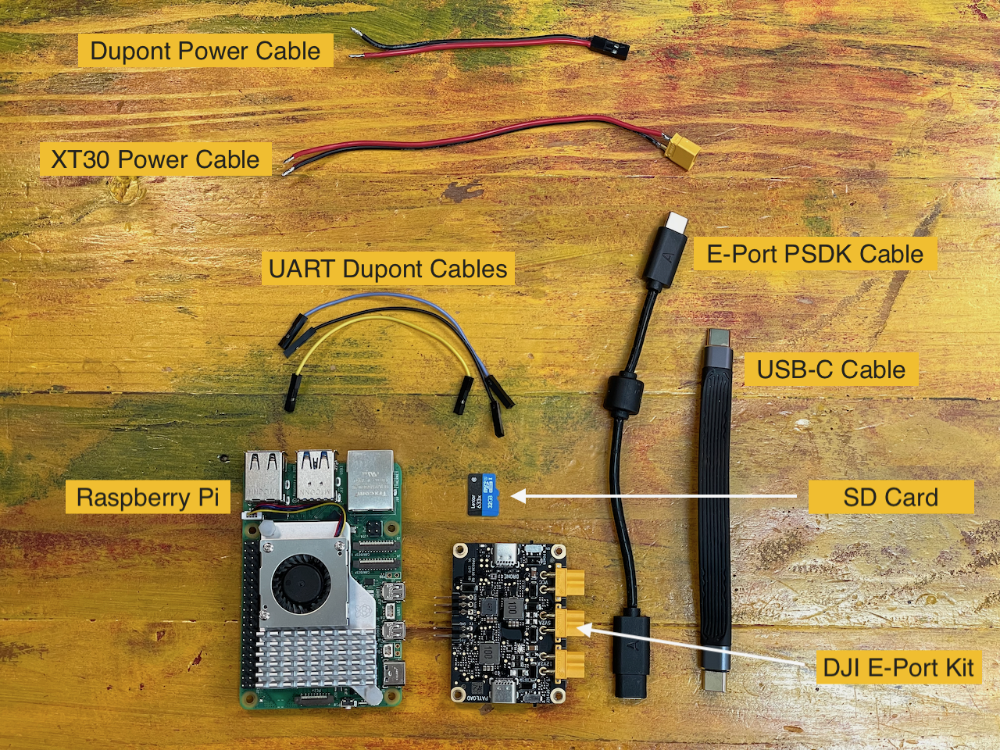
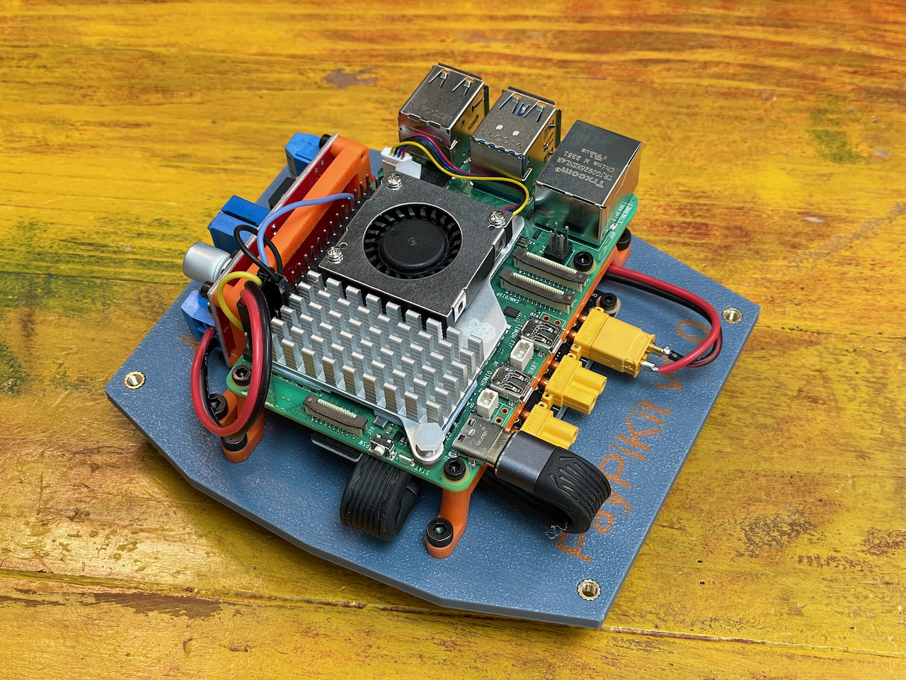

Finishing the Assembled Kit
In this section, we will walk you through the steps to add the electronics to an Assembled Kit to make it ready for development.
If you're coming here from a Basic Kit, there are cabling you will need to procure or put together yourself.
Regardless, you'll need to get the main electronics parts.

Cabling/Harnessing
| Picture | Part Name | Description |
|---|---|---|
| XT30 Power Cable | ||
| Dupont Power Cable | ||
| Dupont UART Cables | ||
| USB-C Cable | Short 12cm USB-C cable to connect the E-Port to the Pi |
{kind=link}
{kind=link}
{kind=link}
{kind=link}
{kind=link}
{kind=link}
{kind=link}
Main Electronics
| Picture | Part Name | Description | Qty |
|---|---|---|---|
| Raspberry Pi 5 8GB | Main computer of the kit. If you plan on doing a lot of intensive compute, opt to get the cooler add on. | 1 | |
| SD Card | For the Raspberry Pi. See their documentation for details. | 1 | |
| DJI E-Port Kit | The breakout board from DJI to connect to the E-Port on M350 | 1 | |
| XL4015 Voltage Regulator | 5A out configurable voltage regulator. If you choose to use another type, you may need to find another way to mount it to the provided bracket | 1 |
E-Port Kit Mount
From the previous step, you will be left with the M2 screws and the spacers (in the bag)
Grab the E-Port Kit you got from DJI (you won't need any of the cables provided in the box for now).
Remove the plexiglass cover, we won't be needing it.
Finally, grab the plate.
You should have these parts in front of you:

Grab a M2 screw and a spacer from the bag, and attached them like in the picture below
Note
The spacers are designed to be snug. The print line will allow the screw to bite in it, so they shouldn't be dropping once placed. It makes it easier to install by placing all screws and spacers on the E-Port board first. Just don't tighten fully just yet.
Next, screw each of the M2 now on the E-Port onto the plate, securing the E-Port to the plate.
Note
Secure the screws progressively as to not create unnecessary strain on the E-Port board. That is, tighten one screw a bit, move to the next until all are relatively tighten the same and continue to rotate until fully secured.
Raspberry Pi
With the E-Port secured, we can move to the Raspberry Pi. The shelves will be used to hold some of the E-Port cables in place.
Grab the parts from the Raspberry Pi bags left from the previous steps.
You should have:
- The 2x Raspberry Pi shelves with the heat set inserts placed.
- 4x M3 screws
- 4x M2.5 screws
Grab one of the shelf and 2x M3 screws and softly secure the shelf.
Note
Note the orientation of the shelf. They aren't symmetrical.
Also, make sure not to secure fully the 'top' M3 screws as we will pass a cable underneath it soom.
Grab the XT30 power cable you made and plug it to the VCC connector on the E-Port kit.
Next, fish the power cable as shown on this picture:
Next, fish the USB-C as depicted here. Note the position of it relative to the shelf.
At this point, you can fully secure the M3 screws holding the shelf to the plate.
Next, loop the cable without folding it completely and plug one end to the payload side USB-C connector on the E-Port Kit.
To finalize the position of the USB-C cable, you can grab the Pi and do a test fit.
The cover will go over the whole kit (if you use the cover) so you would want just enough space on either side the USB-C cable is protruding for it.
Remove the Pi for now.
Grab the UART cables, and plug them to the E-Port pins. They are marked on the PCB.
We only use RX, TX and GND.
From this point on, we are going to focus on securing the Pi, so we need to get it ready to go.
First, get the SD card flashed with your OS and configuration of choice and insert it into the Pi.
Install the second shelves like the first one and secure it.
Place the Pi on top of it following the orientation shown in the picture.
Mind the position of the cables and connect the USB-C.
Use the M2.5 screws to secure the Pi
Connect the UART cable to the right pins (see pinout.xz)
You are now done with the Raspberry Pi installation.
Voltage Regulator
The Pi 5 is a power hungry device. Some of its power will come from the USB-C, the rest from the Voltage Regulator.
To put it together, start with grabbing the part left from the bag.
You should have:
- The mounting bracket
- 4x M2 screws
- The XL4015 voltage regulator.
You wil also need the dupont power cable from before.
Install the dupont power cable on the output of the regulator.
Using the M2 screws, mount the voltage regulator as shown. Mind the orientation with the output on the right side.
Bring the regulator assembly closer to the pre-assembled plate and attach the XT30 power cable to the input.
Mind the polarity. It should be written on the back of the board.
Using the M3 Screws, secure the bracket to the plate as shown.
Finally, plugin the dupont cables to the Raspberry Pi. Check out pinout.xyz to verify the pins.
Cover
Before covering the case, make sure everything is looking good.


You can then place the cover on the top, sliding it at an angle starting from the Pi ports side first, then use the M3 screws from the cover bag to secure it.